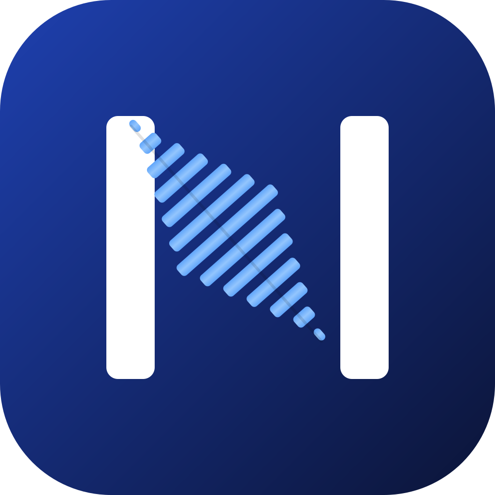
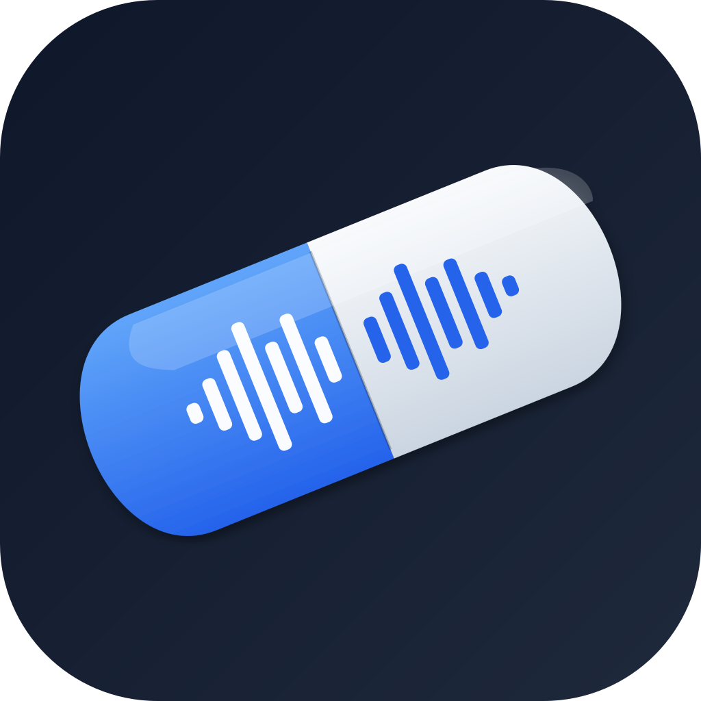
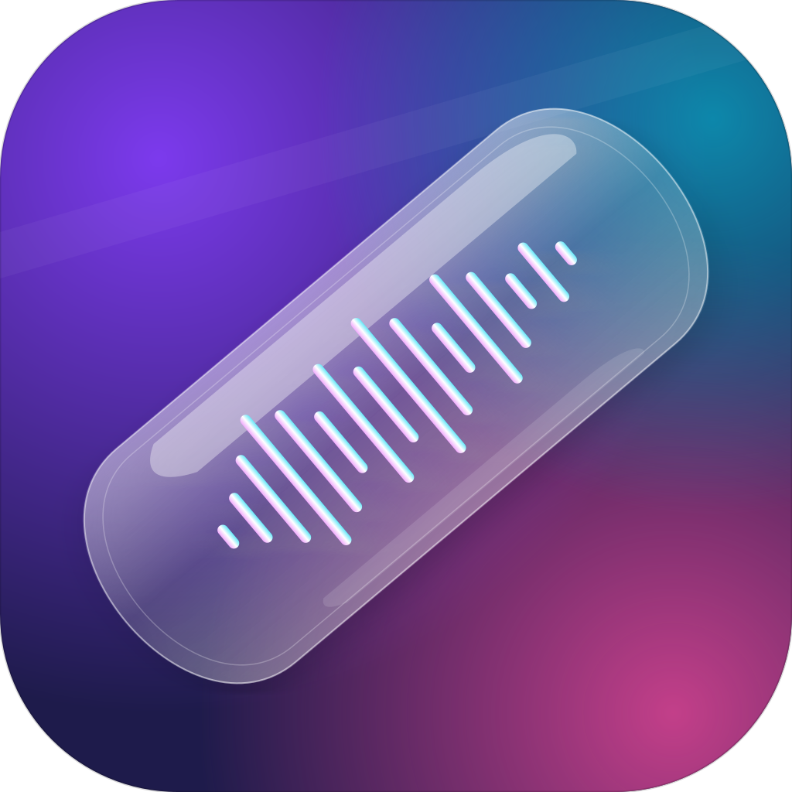

Jedes Icon in Dock-typischen Größen (256, 128, 64, 32 px). Hintergrund ist ein Checker-Muster, damit hell/dunkel sichtbar ist.
Markenstark. Techy. Weißes N auf dunkelblauem Squircle, der diagonale Balken ist eine Waveform in Hellblau. Reine Notika-Identität.

256Warm. Freundlich. Türkiser Hintergrund, weiße Sprechblase mit klassischem Mikrofon darin. „Sprache → Text" sofort lesbar.
Medizinischer Fokus. Weißes Stethoskop auf Medizin-Blau, die Chestpiece zeigt eine Waveform. Phase-2-Positionierung direkt sichtbar.
Jetzt 1000×360 bei −40°, füllt die Anti-Diagonale voll aus. Blau/Weiß, zweifarbige Kapsel, Waveform setzt sich auf der weißen Seite fort. Medizin-Hint durch Kapselform.

256Mesh-Gradient-Background (Violett→Magenta→Cyan), transparent wirkende Glaskapsel mit Reflection-Highlights. Durchgängige Waveform in Gradient-Akzent. iOS-26-Liquid-Glass-Ästhetik.

256